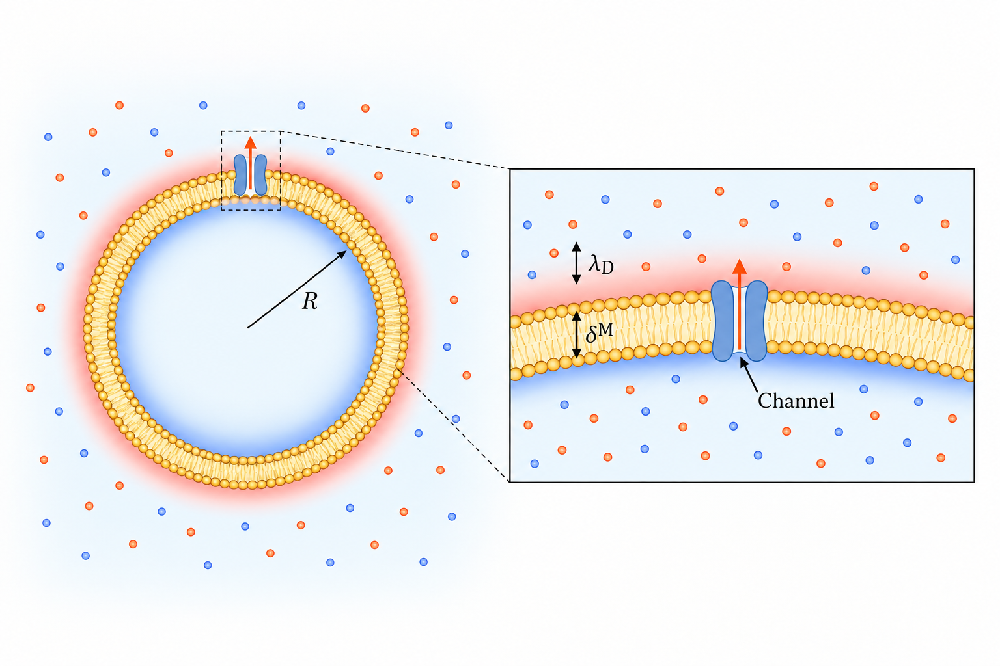
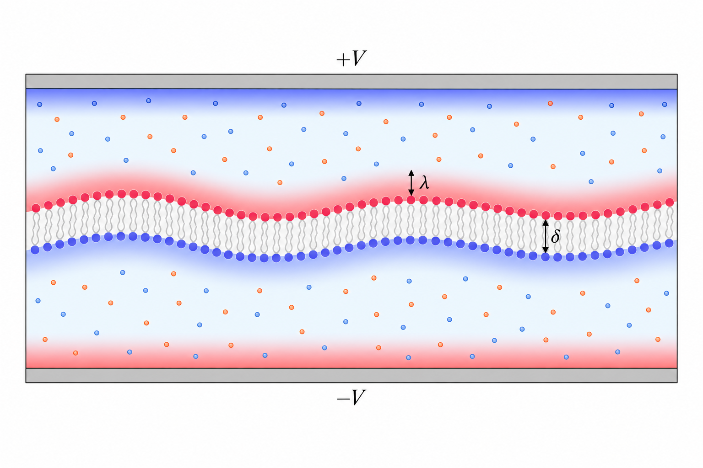

I am a Gordon and Betty Moore Foundation Postdoctoral Fellow at the University of California, Berkeley, working with Karthik Shekhar and Kranthi Mandadapu.
My research lies at the intersection of membrane biophysics and theoretical neuroscience. I use theory and computation to study bioelectricity, membrane electromechanics, and the physical mechanisms that connect ion channel activity to electrical signaling in neurons.
I received my DPhil in Theoretical Physics from the University of Oxford, where I studied string theory under the supervision of Joseph Conlon.
Recent work
-

Localized current, global membrane charging Voltage dynamics of spherical membranes from single ion channel currents
-

Finite thickness, charge, and membrane stability Thickness effects in the electromechanical stability of charged biological membranes
Study notes
Membrane physics
- Bending, tension, and thermal membrane fluctuations
- Debye screening and membrane charging
- Osmosis and Onsager coupling across a membrane
- Curvature elasticity and red blood cell shapes
Statistical physics
- The Kardar–Parisi–Zhang equation: from growing fronts to universality
- Stochastic thermodynamics: work, heat, and rare trajectories
- Motility-induced phase separation
- Reaction–diffusion and Turing patterns on a membrane
High-energy theory
- AdS/CFT: geometry and the holographic dictionary
- Black holes: geometry, thermodynamics, and information
- Entanglement entropy: field theory and holography
- Quantum chaos: operators, spectra, and scrambling